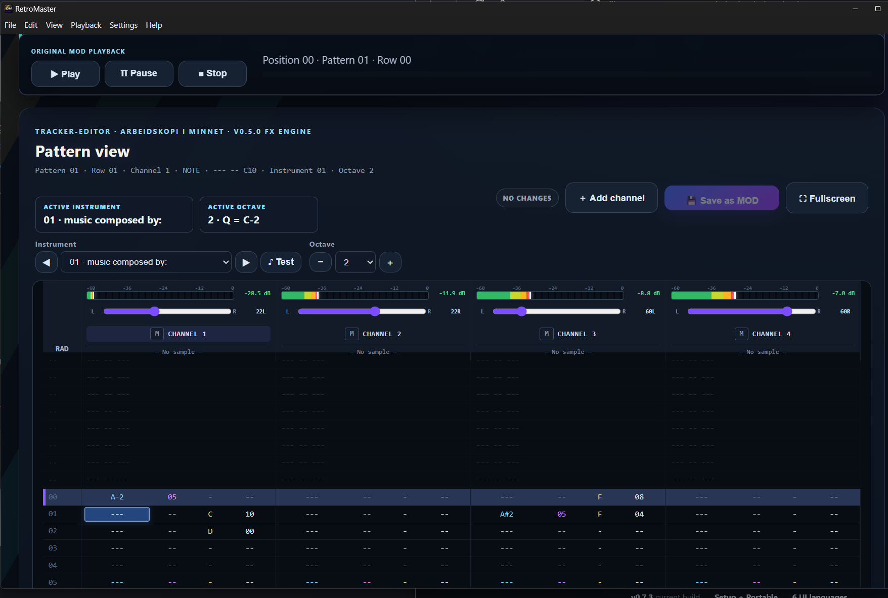

▶
MOD PLAYBACKOriginal module playbackRETROMASTER
PLAY IT. EXPLORE IT. EDIT IT. RESTORE IT. REMASTER IT.

▦
PATTERN EDITOREdit notes, instruments & effects⌁
SAMPLE MANAGERInspect and import samples☷
STUDIO & FXReverb, mix and tone⇧
WAV EXPORTHigh quality rendered output◉
MULTI LANGUAGENO · EN · DE · SV · DA · FI▣
MODERN UIAmiga Vibes or Dark StudioPATTERN 01 · ROW 00
00 A-2 05 --- --- -- ---
01 --- -- C10 A#2 05 F04
02 --- -- D00 --- -- ---
03 --- -- --- --- -- ---
Pattern editing
Edit tracker data directly: notes, instruments, effects and parameters.
Sample 01Volume 64Finetune 0Loop enabled
Sample tools
Inspect the classic 31-slot instrument bank and import audio into a module.
45
60
50
55
Studio & FX
Shape the sound with built-in reverb controls while keeping the module workflow intact.
AMIGA VIBES
DARK STUDIO
Two themes
Classic inspiration or a darker modern studio look. Your choice.
WINDOWS x64 · VERSION 0.7.3
Current hobby builds are not digitally signed, so Windows SmartScreen may display “Unknown publisher”.
Ready for your MOD collection.
RetroMaster is available as both a normal Windows installer and a portable build. The public buttons will point directly to the matching GitHub Release.
MOD MUSIC LIVES ON
Built with respect for the original tracker culture.
RetroMaster is a hobby project created to give classic MOD music a comfortable modern Windows workspace without hiding the patterns, samples and channel structure that make tracker music what it is.
RETROMASTER ON GITHUBSource · releases · changelog · documentation
VIEW REPOSITORY →